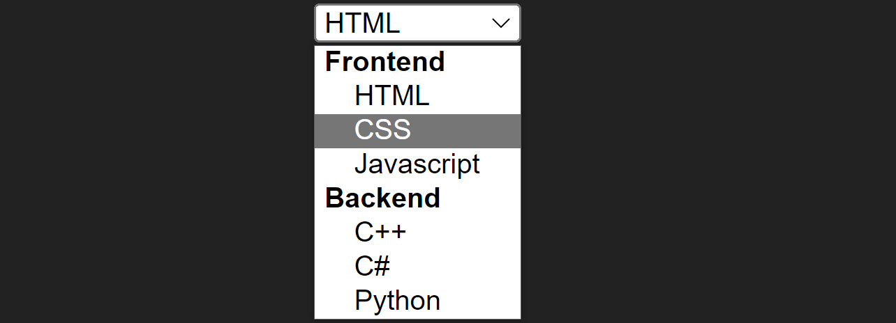

Vamos nos aprofundar um pouco mais nos controles de formulário.
Os controles de botão são utilizados para submeter o formulário à API no servidor, ou executar scripts, incluem:
image: Este controle é utilizado para submeter o formulário, e é criado a partir de uma imagem recuperada de uma fonte src. O controle do tipo imagem não permite definir o atributo value.
submit: Botão que submete o formulário ao servidor automaticamente quando clicado.
reset: Botão utilizado para limpar e/ou redefinir todos os controles no formulário
button: Mesmo que o elemento button já utilizado fora de um formulário, utilizado para executar scripts.
Utilizando um botão para submeter o formulário:
<form> <input type="text" required> <input type="submit" value="Enviar"> </form>
Utilizando um botão para executar Javascript:
<form>
<input type="text" required>
<input type="button" value="Executar" onclick="alert('Botão clicado!')">
</form>
Utilizando um botão para redefinir o formulário:
<form action="s.html"> <input type="text"> <input type="reset" value="Limpar"> </form>
Podemos redefinir o comportamento padrão de qualquer botão de um formulário utilizando Javascript, para, por exemplo, em vez de submeter o formulário ao servidor diretamente, executar uma lógica para tratar os dados recebidos antes de submetê-los, mas vamos começar com um exemplo simples, já que este assunto será abordado no momento certo. Observe o código abaixo:
<input type="text" id="txt">
<input type="submit" value="Clique-me!" id="btn">
<script>
let btn = document.getElementById('btn');
btn.onclick = () => {
document.getElementById('txt').value = 'Botão clicado!';
}
</script>
Neste exemplo, o botão submit não mais envia os dados, mas executa uma instrução JS que neste caso, apenas insere texto no campo de texto. Se não compreendeu o script fique tranquilo, pois ainda estudaremos Javascript básico para manipular o HTML.
O controle file é utilizado para fazer upload de arquivos para o servidor, pode aceitar apenas um arquivo ou múltiplos arquivos.
Tome cuidado ao efetuar o carregamento de arquivos no lado do cliente, pois você pode fazer upload de arquivos com código malicioso que comprometem a integridade e segurança do servidor. Evite essa prática sempre que possível.
Um formulário pode conter um ou mais controles de seleção múltipla. Exemplos de controle de seleção múltipla são os inputs do tipo e checkbox. Enquanto o radio permite que apenas uma das opções seja selecionada, o checkbox permite marcar nenhuma, uma ou mais de uma.
Um input do tipo radio precisa estar em pelo menos duas ou mais unidades para que possua alguma utilidade, além disso, eles devem estar relacionados entre si compartilhando um nome em comum, para que ao marcar uma opção, a outra seja desmarcada:
<form> <legend>Frutas</legend> <input type="radio" name="Frutas" id="abacaxi"> <label for="abacaxi">Abacaxi</label><br> <input type="radio" name="Frutas" id="laranja"> <label for="laranja">Laranja</label><br> <input type="radio" name="Frutas" id="melancia"> <label for="melancia">Melancia</label><br> </form>
Neste exemplo, o grupo de elementos radio possui o nome Frutas definido pelo atributo name. Dessa maneira definimos o comportamento esperado do conjunto. Podemos ainda definir uma das opções como padrão definindo um atributo checked que não precisa receber nenhum valor pois é do tipo booleano, quando está presente este atributo é definido como true vejamos um exemplo:
<input type="radio" name="Frutas" id="abacaxi"> <label for="abacaxi">Abacaxi</label><br> <input type="radio" name="Frutas" id="laranja" checked>
Neste exemplo temos apenas duas opções e ao renderizar a página a segunda estará selecionada automaticamente.
Ao criar conjuntos radio é importante que defina uma opção como checked, caso nenhuma seja padrão, defina a primeira para o usuário perceber que deve alterar ou manter.
Em formulários mais complexos é ideal ainda que grupos radio e checkbox estejam contidos dentro de um fieldset, isso facilita a acessibilidade:
<form>
<fieldset style="display: inline-block;">
<legend>Frontend</legend>
<input type="radio" name="frontend" id="html">
<label for="html">HTML</label><br>
<input type="radio" name="frontend" id="css">
<label for="css">CSS</label><br>
<input type="radio" name="frontend" id="js" checked>
<label for="js">Javascript</label><br>
</fieldset>
<fieldset style="display: inline-block;">
<legend>Backend</legend>
<input type="radio" name="backend" id="cpp">
<label for="cpp">C++</label><br>
<input type="radio" name="backend" id="csharp" checked>
<label for="csharp">C#</label><br>
<input type="radio" name="backend" id="python">
<label for="python">Python</label><br>
</fieldset>
</form>
Note que para cada grupo de botões separados por um fieldset, um atributo name diferente foi definido, se todos os botões possuíssem o mesmo nome, apenas uma opção poderia ser selecionada entre os dois grupos. O resultado deste código pode ser visto abaixo:
O controle checkbox funciona exatamente igual ao radio, a única diferença está no comportamento, pois ele permite múltiplas opções selecionadas ou nenhuma opção. E igualmente devemos saber separar os grupos diferentes em fieldsets, e associar seus labels com o atributo for. Para este tipo de controle o atributo name não é necessário e o atributo checked é opcional.
<fieldset> <legend>Web Design</legend> <input type="checkbox" id="html" checked> <label for="html">HTML</label><br> <input type="checkbox" id="css" checked> <label for="css">CSS</label><br> <input type="checkbox" id="js" checked> <label for="js">Javascript</label><br> </fieldset>
Aqui, a título de exemplo, todas as opções estão previamente selecionadas, mas isto não é bacana de se fazer, o correto é deixar que o usuário inicie sua própria marcação, caso contrário ele será obrigado a ficar desmarcando.
O controle select é um controle do tipo dropdown de múltiplas opções. Ele é apenas um contêiner para os elementos option: que definem o conjunto de opções no qual o usuário escolherá. Para definirmos um valor padrão, basta marcá-lo com o atributo selected, no entanto o primeiro elemento é selecionado por padrão.
<select> <option>C++</option> <option selected>C#</option> <option>Python</option> </select>
Neste exemplo, a segunda opção está selecionada quando a página é renderizada, se omitíssemos o atributo selected, a primeira opção estaria selecionada. Podemos dividir as opções no dropdown em grupos com o elemento <optgroup>, assim:
<select>
<optgroup label="Frontend">
<option>HTML</option>
<option>CSS</option>
<option>Javascript</option>
</optgroup>
<optgroup label="Backend">
<option>C++</option>
<option>C#</option>
<option>Python</option>
</optgroup>
</select>
O resultado do código acima pode ser visto a seguir:
Controles datalist são semelhantes a controles select, com a diferença de que o valor é editável como num campo de texto, podendo o usuário seleciona um dentre a lista ou digitar sua própria opção. A estrutura também é feita com elementos option, mas contidos num contêiner datalist:
Um conjunto datalist por si só não é capaz de nada, ele deve estar associado a um input onde o usuário inserirá o texto, ao receber o foco o input exibirá a lista, e conforme o usuário digita, a lista é filtrada de acordo com as iniciais inseridas. Para exibir a lista, o input deve ter um atributo list que contenha o id da lista. Vejamos um exemplo:
<input list="linguagens"> <datalist id="linguagens"> <option>HTML</option> <option>CSS</option> <option>Javascript</option> <option>C++</option> <option>C#</option> <option>Python</option> </datalist>
O resultado do código acima pode ser observado a seguir:
Neste exemplo a lista é filtrada pelas opções que contenham a letra C.
Para ver uma lista em detalhe de todos os controles input confira: